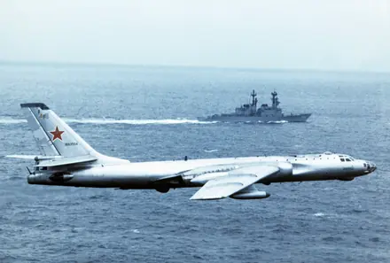

Tu-16 Badger
Tupolev · شوروی · بمبافکن متوسط راهبردی
تو-16 پایه بمبافکنهای موشکانداز شوروی شد و نسخه چینی آن با نام اچ-6 هنوز تولید میشود.
| خدمه | ۶ نفر |
|---|---|
| سرعت بیشینه | ۱,۰۵۰ کیلومتر بر ساعت |
| سقف پرواز | ۱۲,۸۰۰ متر |
| برد | ۷,۲۰۰ کیلومتر |
| حداکثر وزن برخاست | ۷۹,۰۰۰ کیلوگرم |
| طول | ۳۴.۸ متر |
| دهانه بال | ۳۳.۰ متر |
| ارتفاع | ۱۰.۳۶ متر |
| موتور | ۲ × جت |
| مدل موتور | Mikulin AM-3M |
| نخستین پرواز | ۱۹۵۲ |
| ورود به خدمت | ۱۹۵۴ |
| تعداد ساختهشده | ۱,۵۰۷ فروند |
| تسلیحات | توپهای 23 میلیمتری و موشک ضدکشتی یا 9000 کیلوگرم بمب |
Tupolev Tu-16 Badger — Bomber. Medium strategic bomber. The Tu-16 became the basis of the Soviet missile-carrying bombers and its Chinese version, the H-6, is still in production.
باز کردن در اطلس T-AIR